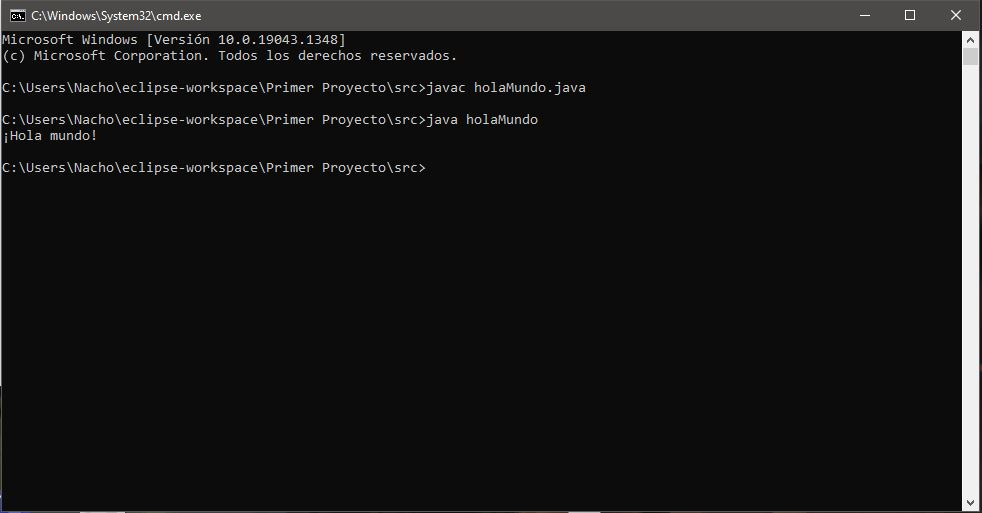
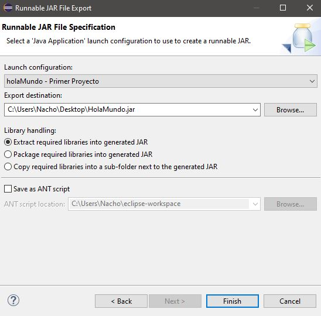
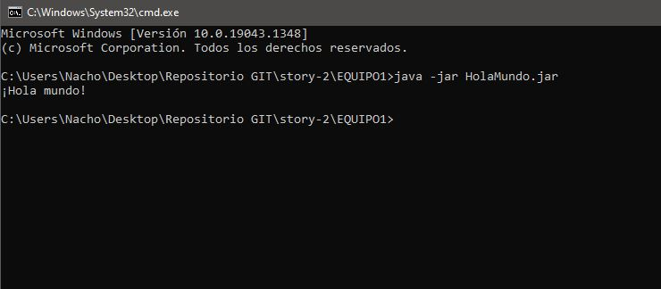

Se crea el archivo .java en el que se pone la linea de codigo:
System.out.println("¡Hola mundo!")
Luego en la cmd pones en la consola "javac nombredeljava.java" y luego pones java nombredelarchivo
Se ejecutaría el .java
Luego pasamos el archivo java a un archivo .jar, eso lo arremos desde eclipse
Te pones encima del archivo y le das a exportar, te pones en los tipos de java y pones el JAR ejecutable
Entonces le das a siguiente y eliges la opcion de ejecutable del archivo y el lugar de exportación
Para ejecutarlo ponemos lo que vemos en la imagen estando en el interior de la carpeta que contiene el .jar
Luego este archivo lo subimos al repositorio git